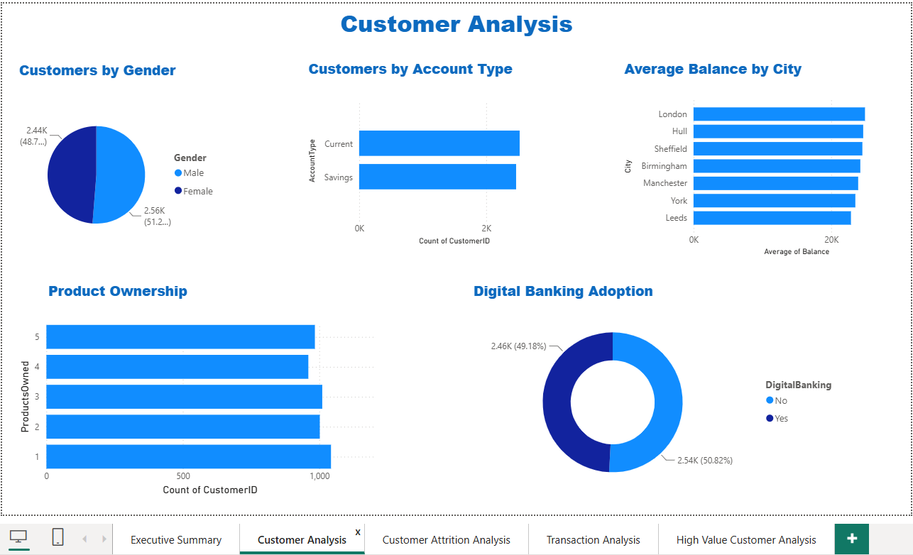
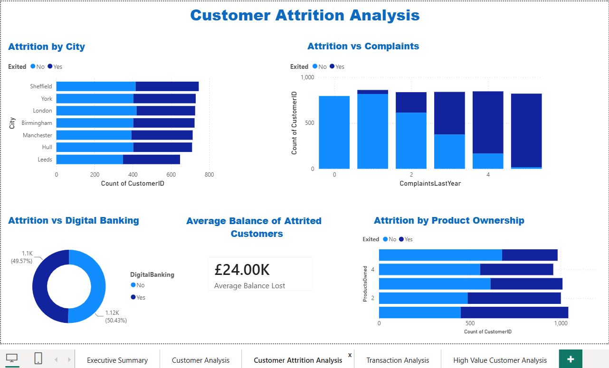
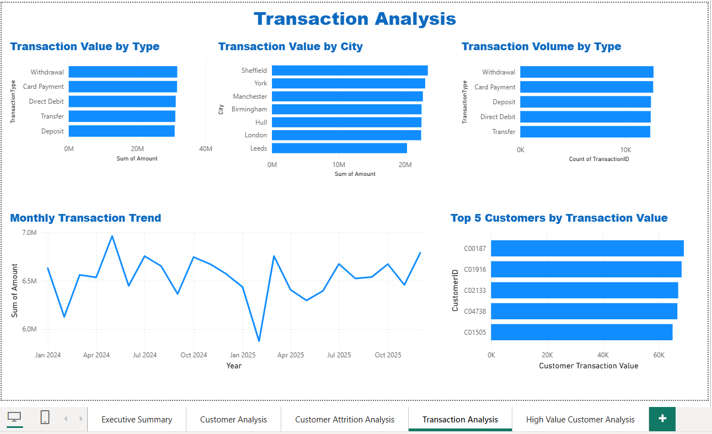
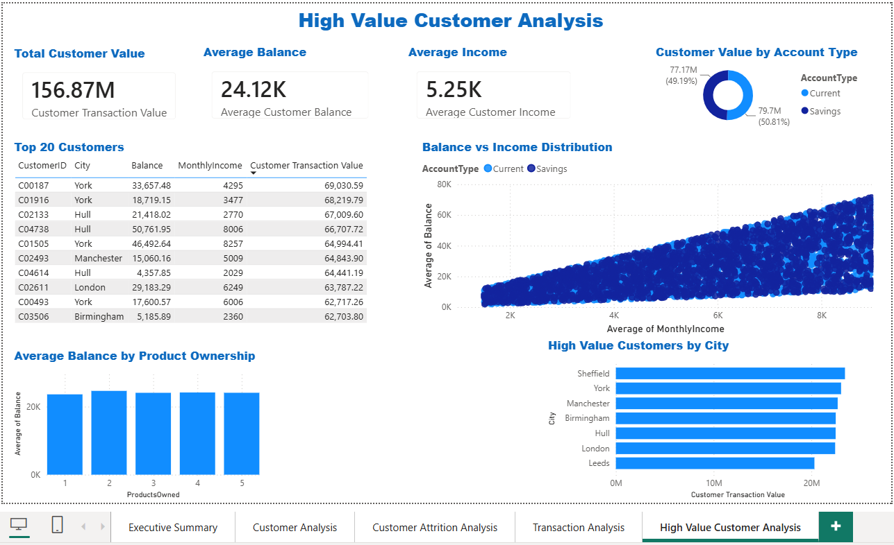

Retail Banking Customer Attrition Analysis
An end-to-end analytics project analysing 5,000 customer profiles and 62,000+ transaction records to understand churn, identify key attrition drivers and deliver actionable business recommendations through SQL, Python and Power BI.
Executive Summary
Retail banks lose revenue when valuable customers leave. This project generated a synthetic banking dataset of 5,000 customer profiles and 62,000+ transaction records, then applied SQL behavioural analysis to identify a clear correlation between customer complaints and attrition — surfaced through a multi-page Power BI executive dashboard.
Business Problem
Customer attrition directly affects profitability. The business needed a repeatable analytical process to identify high-risk customers and support retention strategies, communicated to a non-technical stakeholder audience.
Objectives
- Generate a realistic synthetic dataset covering customers, accounts and transactions.
- Perform exploratory data analysis in Python.
- Use SQL to identify behavioural churn drivers.
- Design a multi-page Power BI executive dashboard.
- Surface recommendations a non-technical audience can act on.
Dataset Overview
- 5,000 synthetic customer profiles
- 62,000+ transaction records
- Customer complaints & service interactions
- Account balances & product holdings
- Regional & demographic segments
- Churn indicator
Technology Stack
Python (Pandas) • SQL • Power BI
Project Workflow
- Synthetic Data Generation (Python)
- Data Cleaning & Validation
- Exploratory Data Analysis
- SQL Behavioural Analysis
- Power BI Dashboard Development
- Business Recommendations
Key Business Insights
Complaints & Attrition
SQL analysis identified a clear correlation between recorded customer complaints and attrition rates.
Regional Performance
The dashboard tracks attrition and balance trends by region, surfacing where retention effort is most needed.
Account Activity
Inactive customers showed noticeably higher churn risk than actively engaged customers.
Executive Reporting
A multi-page Power BI dashboard was designed specifically for a non-technical stakeholder audience.
Deliverables
- Synthetic dataset generation script (Python)
- SQL behavioural analysis queries
- Multi-page Power BI executive dashboard
- Business recommendations summary
Live Dashboard Screenshots





Outcome
This project demonstrates an end-to-end analytical workflow — from synthetic data generation to SQL-driven behavioural insight to executive reporting — reflecting the same reporting discipline I used daily at ANZ Bank, applied to a fresh dataset and a modern BI-first workflow.